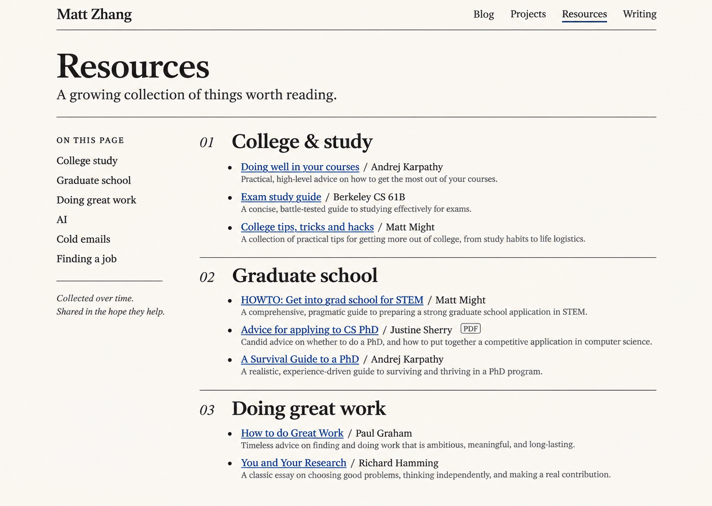
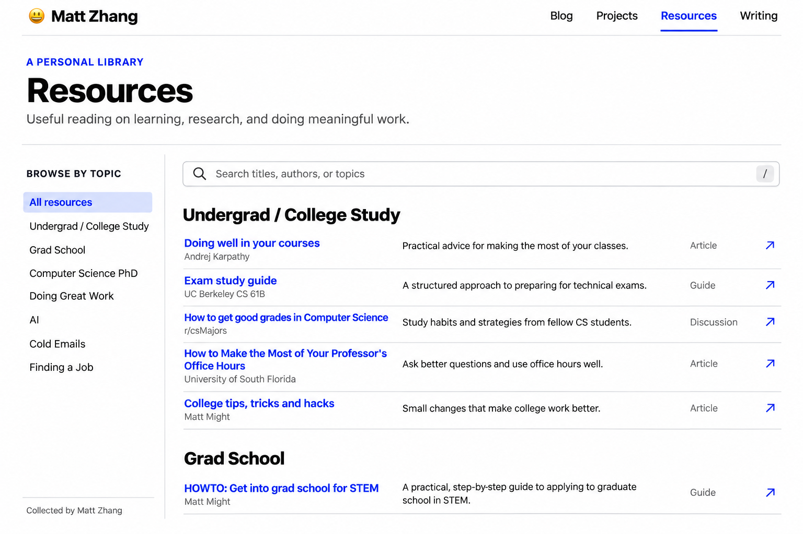
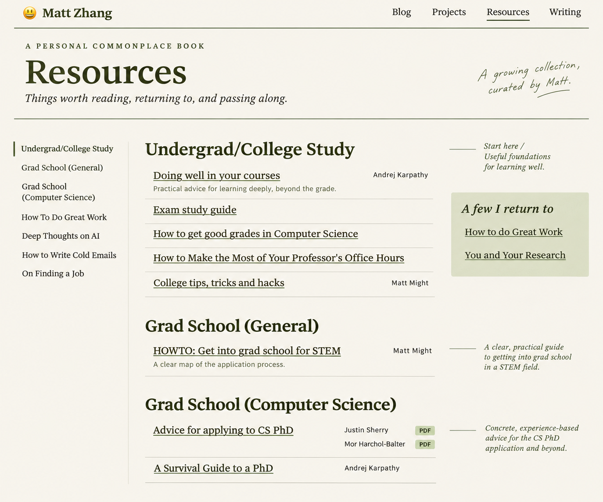
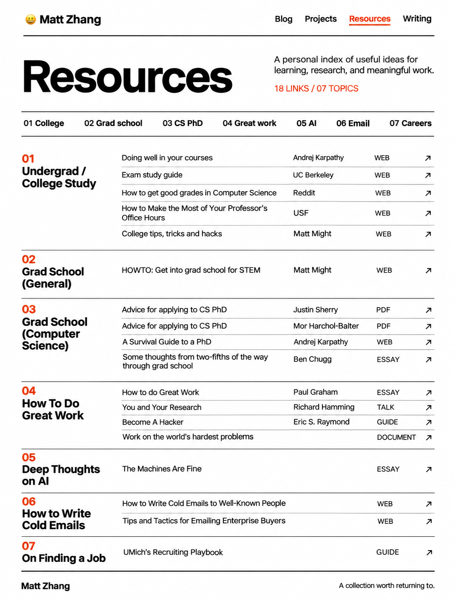
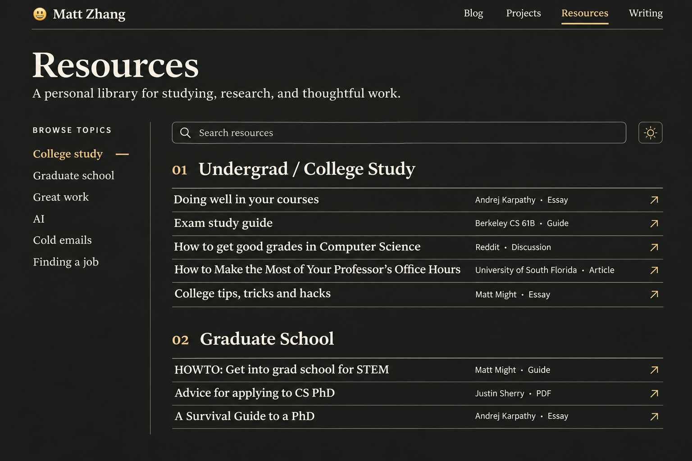
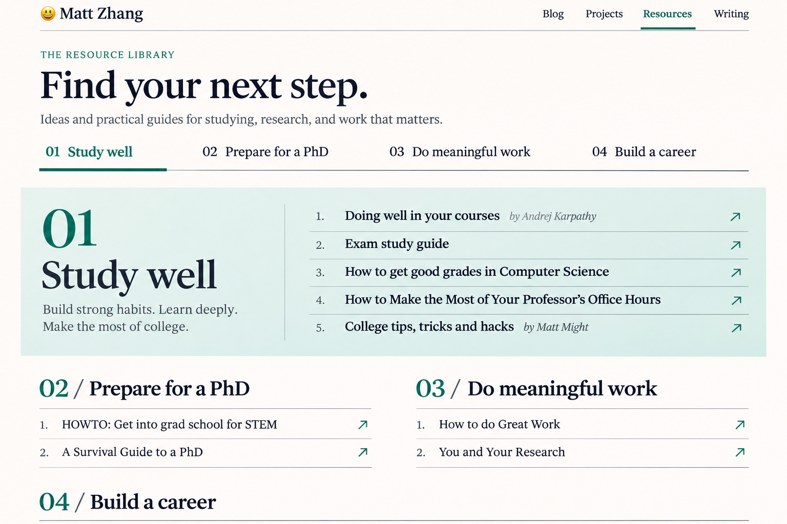
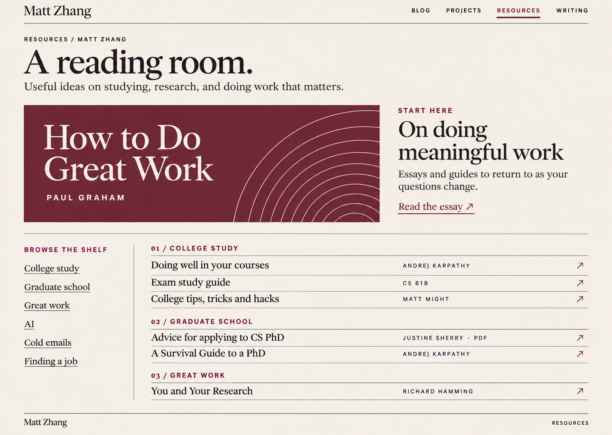
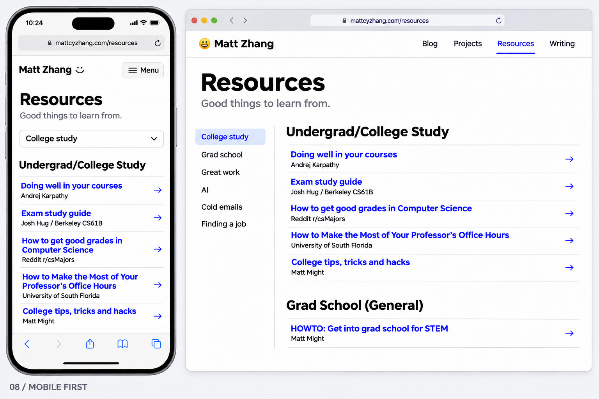
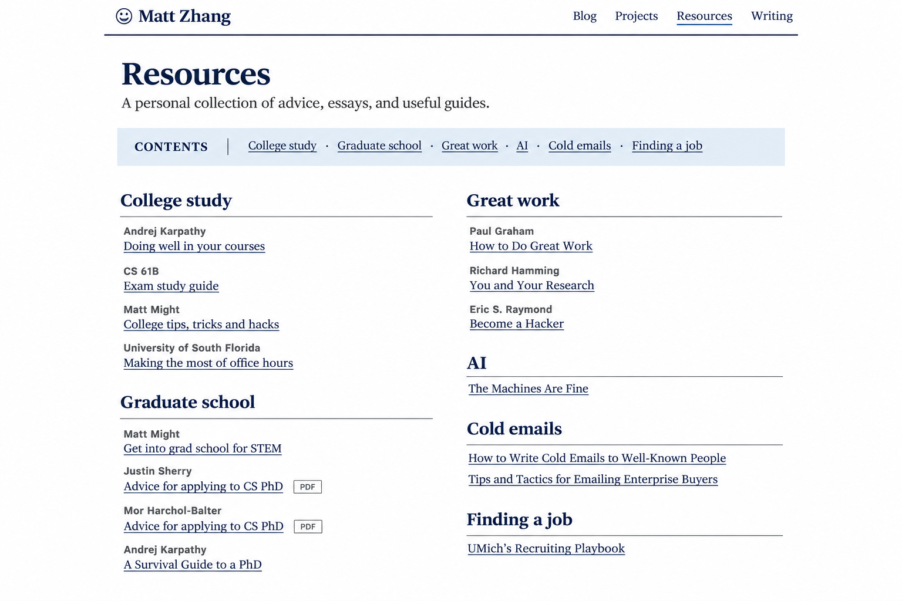
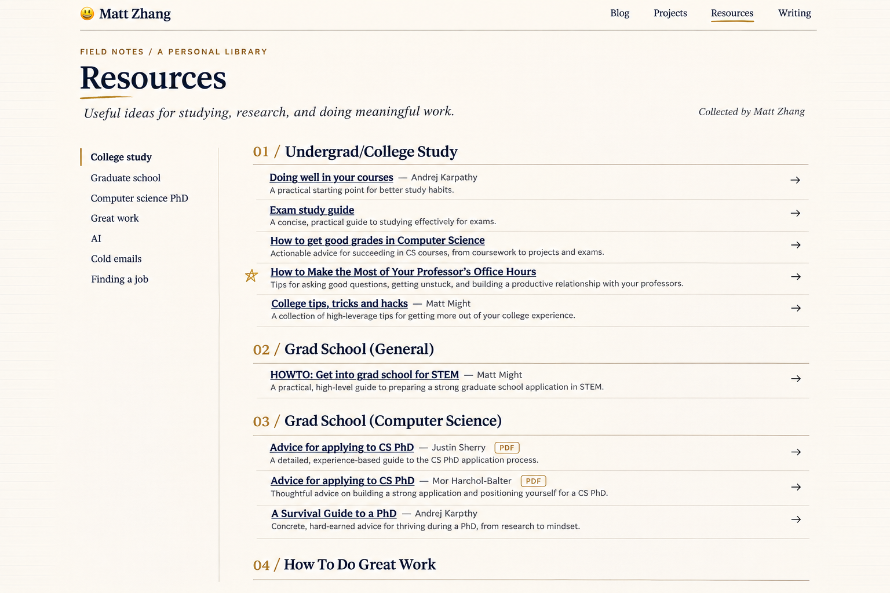

01
Editorial

Ivory, serif typography, blue links, and an annotated reading list.
Agent review & prompt ↗02
Research library

White and cobalt, search, a topic index, and compact resource rows.
Agent review & prompt ↗03
Commonplace book

Cream and sage, personal margin notes, and a book-like reading experience.
Agent review & prompt ↗04
Swiss index

Strong typography, a strict grid, and numbered topic sections.
Agent review & prompt ↗05
Dark reading room

Warm dark colors and a calm, high-contrast reading layout.
Agent review & prompt ↗06
Learning pathways

Resources arranged around study, research, meaningful work, and careers.
Agent review & prompt ↗07
Ideas magazine

An editorial feature and a browsable collection of essays.
Agent review & prompt ↗08
Mobile first

A phone-centered design with clear topics and comfortable touch targets.
Agent review & prompt ↗09
Academic directory

A restrained university-style reference directory.
Agent review & prompt ↗10
Field notes

A personal notebook with an organized index and thoughtful details.
Agent review & prompt ↗